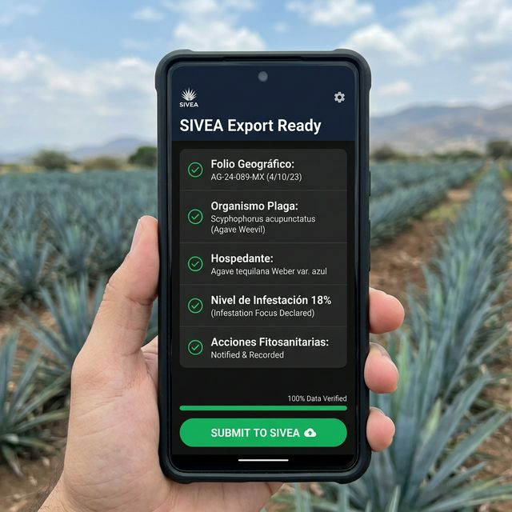
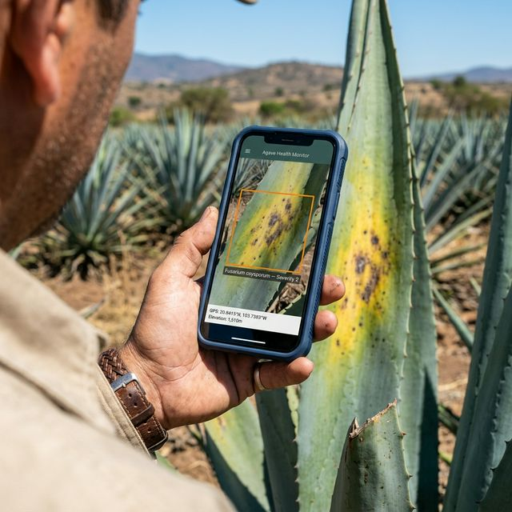
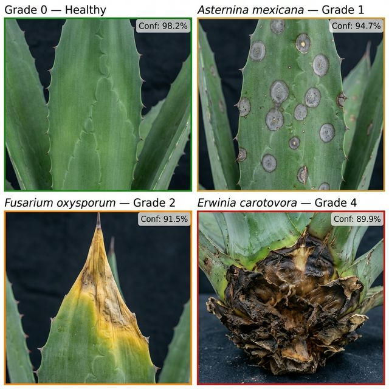
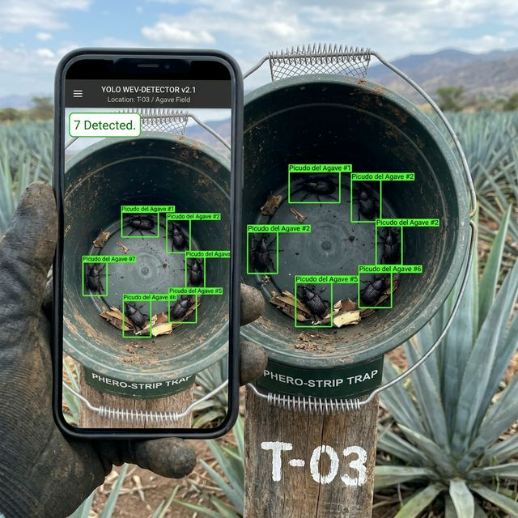

Fitosanitario
en un Teléfono.
Una demostración de visión artificial móvil para inspecciones fitosanitarias conformes con SENASICA y CRT — abarcando el Censo Físico Trimestral y el Programa Bimestral de Trampeo de Picudo.
El marco fitosanitario de México exige una cadena cerrada y auditable desde el Jardín Madre hasta el Pasaporte de Movimiento — regulada por SENASICA, CRT, and reported through SIVEA.
- Registro de Predio — Cada lote registrado con número CRT y Folio Geográfico
- Censo Trimestral — Mínimo 100 plantas por lote; 1% de muestreo en predios mayores a 5 ha
- Trampeo Quincenal — Conteo de picudos por trampa cada 15 días
- Carga a SIVEA — Incidencia, severidad, organismo y acciones son campos obligatorios
- NOM-006-SCFI-2012 — Cumplimiento de especificaciones de Tequila del campo a la botella

El explorador recorre el lote en patrón de zig-zag o X. En cada planta, apunta su smartphone a las pencas y la base de la piña.
- La IA clasifica los síntomas foliares — manchas grises circulares, amarillamiento apical, lesiones necróticas acuosas — al instante
- Severidad calificada 0–4 según escala SENASICA, pre-llenada en la bitácora con un solo toque de confirmación
- Verificación de pudrición del corazón — el explorador presiona la base de la piña; si está blanda o huele mal, se marca como Foco de Infestación
- Activación automática al 15% — el sistema marca el lote para intervención obligatoria cuando la incidencia supera el umbral SENASICA
Manchas
Amarillamiento
Pudrición
Total

El modelo de Visión general de FarmAgent detecta los cuatro fenotipos de enfermedad primarios bajo diferentes condiciones de luz, etapas de crecimiento y orientaciones foliares.
- Asternina mexicana — manchas grises circulares (mancha gris) en pencas
- Fusarium oxysporum — amarillamiento apical (marchitez), marchitamiento
- Erwinia carotovora — lesiones necróticas acuosas, pudrición blanda en la piña
- Scyphophorus sp. — orificios de entrada, indicadores de corazón hueco

Las trampas tipo balde y sándwich cebadas con feromonas se inspeccionan cada 15 días. El conteo manual es tedioso y depende del operador.
FarmAgent aplica un modelo de detección de objetos YOLO en tiempo real entrenado específicamente en Scyphophorus acupunctatus — el Picudo del Agave — que cuenta cada insecto adulto en la trampa desde una sola fotografía.
- Distingue picudos adultos de residuos, hormigas y otros insectos
- El conteo se registra automáticamente en el ID de trampa y Folio Geográfico
- Picudos por trampa por día calculados en tiempo real
Picudos / trampa / día activa intervención química obligatoria. FarmAgent lo señala automáticamente en cada inspección.

Cada calificación de enfermedad, conteo de picudo, fotografía e identidad del explorador se ancla a una coordenada GPS en tiempo real — dentro de 3 metros de la planta afectada.
- Registro de inspección espacialmente explícito — el inspector del CRT puede ver exactamente qué plantas fueron revisadas y cuándo
- Visualización de Foco de Infestación — las zonas calientes aparecen en el mapa antes de que el explorador termine el lote
- Cadena de custodia fotográfica — con marca de tiempo, atribuida al explorador, disponible para auditoría CRT en cualquier momento
- Generación de ID de muestra — fecha, GPS, colector e ID de lote agrupados automáticamente para envío al laboratorio

Cuando la inspección trimestral concluye, FarmAgent calcula la incidencia automáticamente y pre-llena los campos requeridos por SIVEA:
- Folio Geográfico — ID del predio vinculado a GPS
- Organismo Plaga — nombre científico de cada plaga detectada
- Hospedante — Agave tequilana Weber
- Nivel de Infestación — % de incidencia vs. puntuación de severidad, calculado automáticamente
- Acciones Fitosanitarias — intervención registrada y vinculada al número de agroservicios CRT
| Capability | Technology | Application |
|---|---|---|
| Clasificación de enfermedades foliares | Visión por Computadora General | Severidad 0–4, 4 patógenos primarios |
| Conteo de picudo del agave | Detección de objetos YOLO | Conteo en tiempo real por trampa por inspección |
| Fijación GPS a nivel de planta | Localizador Visual | Cada observación dentro de 3m de precisión |
| Mapeo de campo SIVEA | Integración con Folio Geográfico | Pre-llena todos los campos regulatorios requeridos |
| Declaración de Foco de Infestación | Motor de umbrales SENASICA | Auto-señalización 15% / 8% + notificación al Subcomité |
| Cadena de custodia fotográfica | Registro con marca de tiempo atribuido al explorador | Disponible para auditoría CRT en cualquier momento |
| Verificación de Intervalo Pre-Cosecha | Cumplimiento del Intervalo Pre-Cosecha | Aplicaciones químicas bloqueadas antes de la autorización de cosecha |
trazable y comprobable.
Invitamos al CRT a ejecutar un piloto supervisado en un lote registrado — con su inspector de campo presente — para validar los datos de FarmAgent contra sus propias observaciones de referencia.
Solicitar un Piloto Supervisado